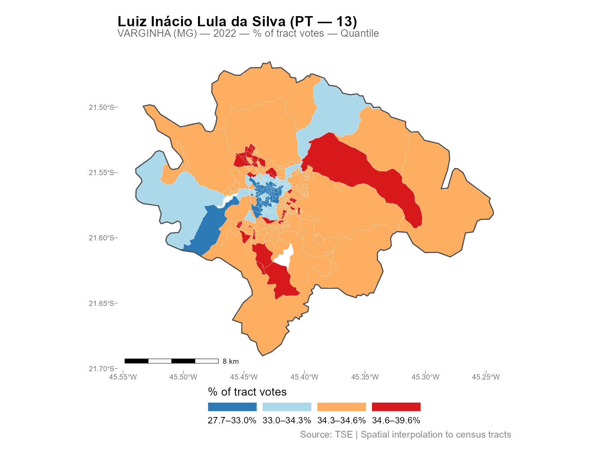
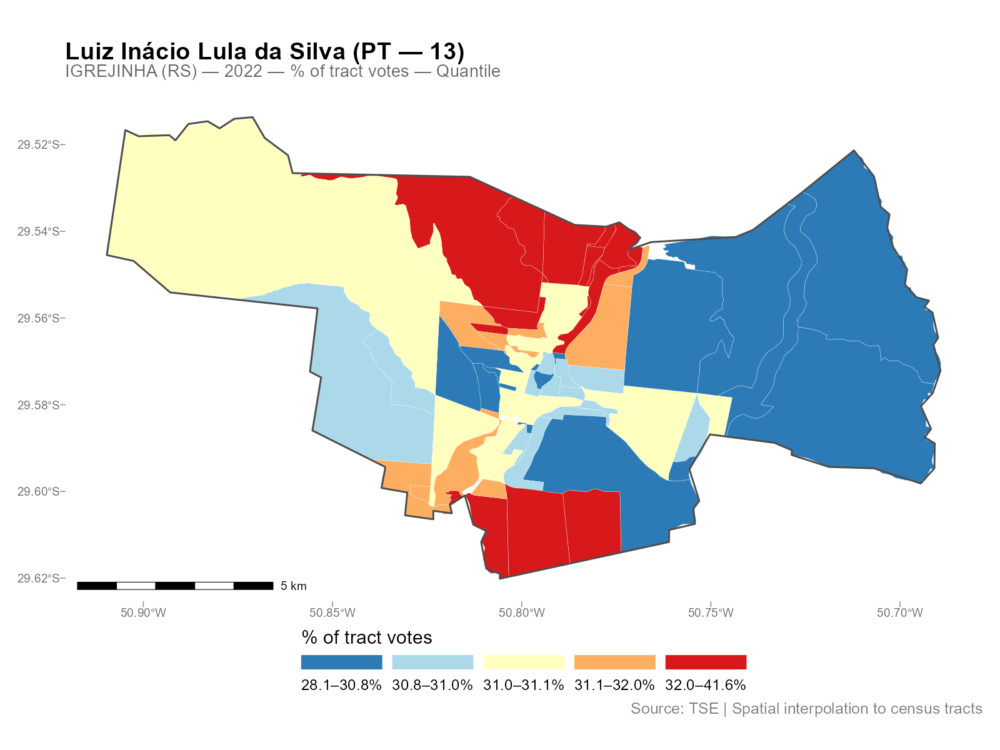

Introduction
interpElections interpolates data from source points (polling stations, schools, hospitals) into target polygons (census tracts, districts, neighborhoods) using travel-time-based inverse distance weighting with column-normalized weights. The decay parameter for each zone is calibrated against known demographic totals, ensuring that source totals are conserved.
Before you start, install the optional dependencies:
setup_torch() # GPU optimization (CUDA, MPS, or CPU fallback)
setup_java() # Java 21 for r5r travel-time routingExample 1: Varginha (MG)
The simplest way to use interpElections with Brazilian data is the
interpolate_election_br() wrapper. It downloads census
data, electoral results, and road networks automatically.
result_vga <- interpolate_election_br(
"Varginha", year = 2022,
cargo = "presidente",
what = c("candidates", "turnout"),
keep = "electoral_sf"
)The console output shows the progress:
[1/9] Resolving municipality identifiers...
VARGINHA (MG) - IBGE: 3170701, TSE: 54135
Census year: 2022 (election 2022)
[2/9] Preparing census population data...
[3/9] Preparing census tract geometries...
[4/9] Preparing electoral data...
[5/9] Matching calibration brackets...
[6/9] Downloading OSM road network...
[7/9] Computing travel times...
[8/9] Optimizing alpha...
PB-SGD colnorm (cpu, float32): full-data gradient, max 200 epochs
Completed 85 epochs (52.3s), objective=502,361 (converged)
[9/9] Interpolating...
Interpolated 42 variables into 279 census tracts
Done.
result_vgainterpElections result -- Brazilian election
Municipality: VARGINHA (MG)
IBGE: 3170701 | TSE: 54135 | Election: 2022 | Census: 2022
Census tracts: 279 | Sources: 37
Variables: 42
Candidates: 13 (CAND_30, CAND_44, CAND_12, CAND_13, ...)
Turnout: 1 (QT_COMPARECIMENTO)
Calibration: gender x 7 age brackets
Optimizer: pb_sgd_colnorm_cpu (obj = 502361.44)
Alpha: 279 x 14 matrix [0.010, 20.000] (mean 3.027)
Contents:
result$tracts_sf sf with census tracts + interpolated columns
result$interpolated numeric matrix [279 x 42]
...Three lines downloaded all data, computed travel times, optimized parameters, and interpolated all vote counts into 279 census tracts.
plot(result_vga, variable = "Lula")
Compare two candidates side by side:

Example 2: Igrejinha (RS)
A smaller city, with the same workflow:
result_igr <- interpolate_election_br(
"Igrejinha", year = 2022,
cargo = "presidente",
what = c("candidates", "turnout")
)
result_igrinterpElections result -- Brazilian election
Municipality: IGREJINHA (RS)
IBGE: 4310108 | TSE: 87033 | Election: 2022 | Census: 2022
Census tracts: 85 | Sources: 17
Variables: 42
Candidates: 13 (CAND_13, CAND_12, CAND_30, CAND_22, ...)
Turnout: 1 (QT_COMPARECIMENTO)
Calibration: gender x 7 age brackets
Optimizer: pb_sgd_colnorm_cpu (obj = 248107.37)
Alpha: 85 x 14 matrix [0.010, 15.682] (mean 4.089)
plot(result_igr, variable = "Lula")
Different city, different spatial patterns, same three-line workflow.
Exploring the Results
The result object has several S3 methods for inspection:
# Detailed summary with per-variable statistics
summary(result_vga)
# Alpha decay parameters (n x k matrix: tracts x brackets)
head(coef(result_vga))
# Export as plain data frame (drops geometry)
df <- as.data.frame(result_vga)
head(df[, 1:5])
# Interactive map (opens in browser)
plot_interactive(result_vga, variable = "Lula")See vignette("working-with-results") for the full
reference on S3 methods, all plot types, residual analysis, and areal
aggregation.
Controlling What Gets Interpolated
The what parameter controls which variables are
interpolated:
# Just candidates (default)
result <- interpolate_election_br("Varginha", year = 2022,
what = "candidates")
# Parties (aggregated by party abbreviation)
result <- interpolate_election_br("Varginha", year = 2022,
what = "parties")
# Turnout and abstention
result <- interpolate_election_br("Varginha", year = 2022,
what = "turnout")
# Voter demographics (gender, education)
result <- interpolate_election_br("Varginha", year = 2022,
what = "demographics")
# Everything at once
result <- interpolate_election_br("Varginha", year = 2022,
what = c("candidates", "parties", "turnout", "demographics"))Filter specific candidates or parties:
# By ballot number
result <- interpolate_election_br("Varginha", year = 2022,
cargo = "presidente", candidates = c(13, 22))
# By name (accent-insensitive substring matching)
result <- interpolate_election_br("Varginha", year = 2022,
cargo = "presidente", candidates = "LULA")
# Specific parties
result <- interpolate_election_br("Varginha", year = 2022,
what = "parties", parties = c("PT", "PL"))Other useful parameters:
-
cargo:"presidente","governador","senador","deputado_federal","deputado_estadual","prefeito","vereador" -
turno:1(first round, default) or2(runoff) -
census_year: auto-selected from election year, or override manually -
data(muni_crosswalk): lookup table with all 5,710 municipalities
What’s Happening Under the Hood
The wrapper interpolate_election_br() calls these
internal steps in sequence (you don’t need to call them directly):
# 1. Census population by age bracket (internal)
pop_data <- interpElections:::br_prepare_population("Varginha", year = 2022)
# 2. Census tract geometries with population columns (internal)
tracts_sf <- interpElections:::br_prepare_tracts(3170701, pop_data)
# 3. Electoral data at polling stations (internal)
electoral <- interpElections:::br_prepare_electoral(
code_muni_ibge = "3170701", code_muni_tse = "54135",
uf = "MG", year = 2022, cargo = "presidente",
what = c("candidates", "turnout")
)
# 4. Travel times via r5r walking routes
time_matrix <- compute_travel_times(tracts_sf, electoral_sf)
# 5. Optimize per-tract decay parameters
optim_result <- optimize_alpha(time_matrix, pop_matrix, source_matrix)
# 6. Use weight matrix from optimization and interpolate
W <- optim_result$W
interpolated <- W %*% electoral_dataSee vignette("methodology") for the full technical
treatment with equations, visualizations, and worked examples using real
data.
Custom Data: Any Point-to-Polygon Problem
interpElections works with any point-to-polygon disaggregation, not just Brazilian elections. Here is a synthetic example:
library(interpElections)
# Synthetic data: 5 zones, 3 sources, 2 calibration variables
set.seed(42)
tt <- matrix(
c(5, 15, 30, 25, 40,
20, 8, 12, 35, 45,
35, 30, 18, 10, 7),
nrow = 5, ncol = 3,
dimnames = list(paste0("zone_", 1:5), paste0("src_", 1:3))
)
# Calibration: population counts known at both levels
pop_matrix <- matrix(
c(100, 300, 150, 200, 250, # young population per zone
80, 250, 120, 180, 220), # old population per zone
nrow = 5, ncol = 2,
dimnames = list(NULL, c("pop_young", "pop_old"))
)
source_matrix <- matrix(
c(250, 400, 350, # young counts at sources
210, 350, 290), # old counts at sources
nrow = 3, ncol = 2,
dimnames = list(NULL, c("count_young", "count_old"))
)
# Optimize alpha (uses per-bracket SGD)
optim_result <- optimize_alpha(
time_matrix = tt + 1, # offset already applied
pop_matrix = pop_matrix,
source_matrix = source_matrix,
offset = 0, # offset already in tt
verbose = FALSE
)
cat("Optimized alpha (5 x 2 matrix):\n")
print(round(optim_result$alpha, 2))
# Use weight matrix from optimization
W <- optim_result$W
# Interpolate a variable measured at sources
revenue <- c(5000, 8000, 6500)
interpolated_revenue <- as.numeric(W %*% revenue)
cat("Source total:", sum(revenue), "\n")
cat("Interpolated total:", round(sum(interpolated_revenue)), "\n")
cat("Per-zone:", round(interpolated_revenue), "\n")Conservation: the interpolated total matches the source total exactly.
Core Functions: Maximum Flexibility
For full control, use the core functions directly:
# Load bundled example data
tt <- readRDS(system.file("extdata/example_tt_matrix.rds",
package = "interpElections"))
pop <- readRDS(system.file("extdata/example_pop_matrix.rds",
package = "interpElections"))
src <- readRDS(system.file("extdata/example_source_matrix.rds",
package = "interpElections"))
# Optimize
result <- optimize_alpha(tt, pop, src, verbose = FALSE)
result
# Weight matrix is returned from optimization
W <- result$W
# Verify conservation
cat("Column sums (should be ~1):", round(colSums(W), 4), "\n")
cat("Row sum range:", round(range(rowSums(W)), 4), "\n")Next Steps
-
vignette("methodology"): full pipeline walkthrough with equations, visualizations, and real-data examples from Varginha (MG) -
vignette("working-with-results"): all S3 methods, plot types, residual analysis, and areal aggregation with Niteroi and Belo Horizonte examples